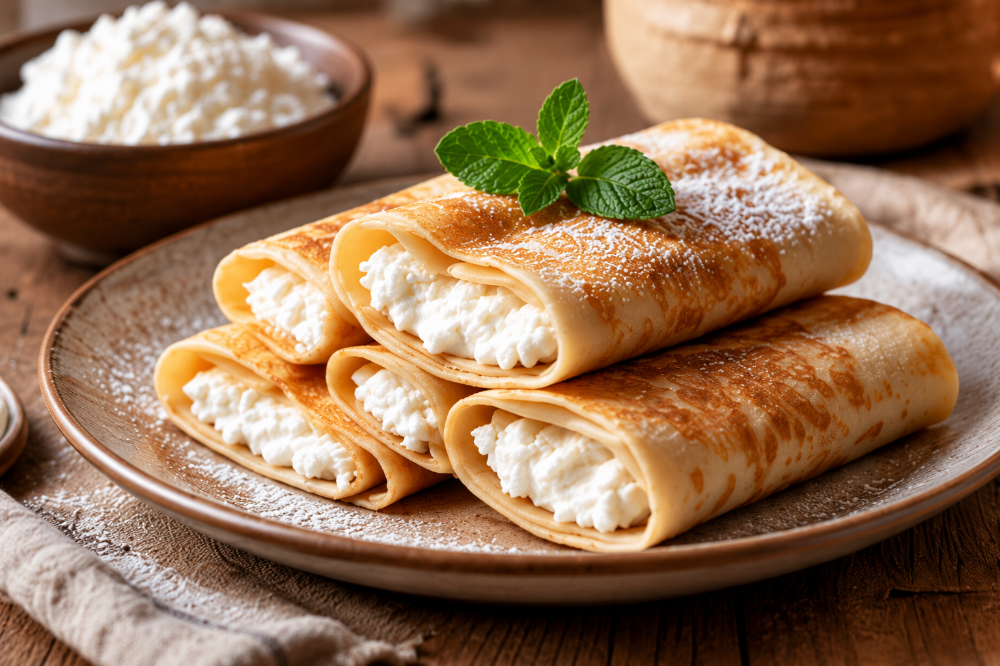

Борошно – 1 склянка
Сметана домашня –
3 ст. л. (для тіста)
плюс сметана для подачі на стіл
Вода кип'ячена тепла (H2O) або BONAQUA®
– 2 склянки
Олія –
1 ст. л. 2 ст. л. (для тіста)
плюс масло для змазування сковороди
Яйця – 2 шт.
Сир домашній –
250 300 грам
Масло вершкове – 50 грам
Сіль – щіпка
Цукор – за смаком
(можна не давати)
Успіх смачних млинців залежить від того,
які використані інгредієнти і що вибрано за основу!